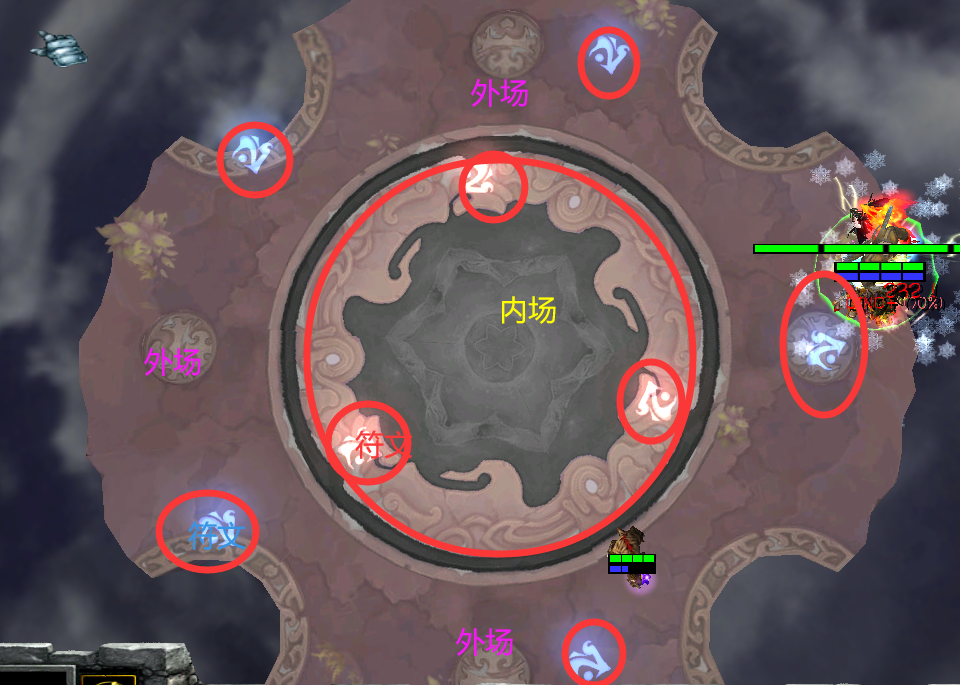
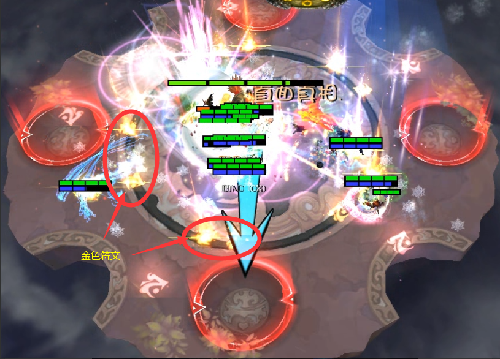
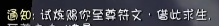
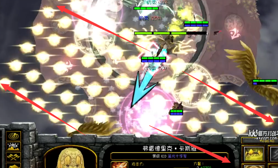
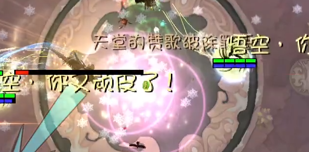
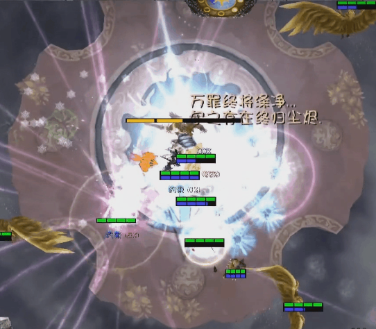
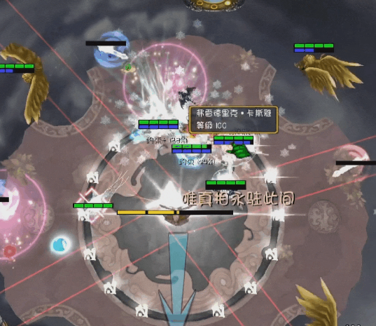
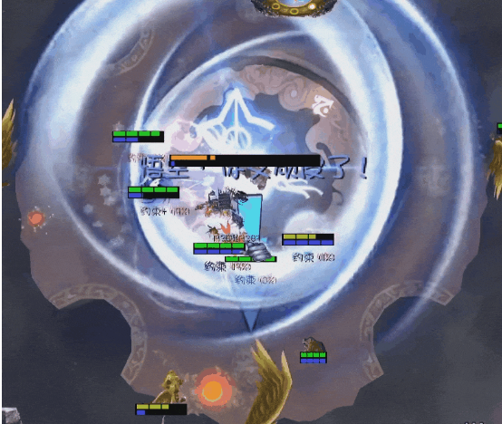

神圣脚链
吃到BOSS技能会增加约束值；达到100层后上树并眩晕5秒，受到特定强化束缚技能时会重新刷新至5秒。层数越高，受到的治疗越低。
- 约5秒未吃技能后进入自然消减。
- 红色：刚吃技能，不能自然净化；蓝色：受队友免疫/净化影响；白色：自然消减。
- 首次上树没有减伤，后续上树约有60%-75%减伤，结束后层数归零。
国服动态攻略 · 更新基准 2026.06.15
这场战斗的核心不是固定阵容，而是辅助分工、约束值管理、天堂审判净化、符文格挡和阶段站位。开荒前先分配四剑位置、小天使打断、破盾、解控与点名观察职责。
约束值满层上树、天堂审判未及时解除、P2扇形重叠、P3白圈缺人、P4咏唱点名重叠、P5飞剑未处理、P6次元斩重复吃点名。
必须先懂
贯穿整场战斗
吃到BOSS技能会增加约束值；达到100层后上树并眩晕5秒，受到特定强化束缚技能时会重新刷新至5秒。层数越高，受到的治疗越低。
持续受到魔法伤害并增加约束值。带有该减益时再次命中带天堂审判效果的技能，可能直接死亡。
P3后可抵挡绝大多数BOSS技能，同时免疫伤害、约束值和天堂审判。成功格挡指定白色技能获得绝对者力量。
P4咏唱开始后获得常驻强化：额外10%减伤与10%魔抗。场地加入黄色符文，其关联技能多为纯粹伤害。

重点观察斜向攻击路径，避免站在交叉线上。
重点观察横竖方向，利用斜角安全区移动。
金翼后加入，多为纯粹伤害，并可能附带短暂束缚。
开荒配置
参考：风法 / 包 / 痴女 / 智锤 / 女巫 / 机械或召唤 + 4C
清层、群体免疫沉默、治疗和复活；重点照顾脚下队友。拉锯战中技能CD不足，需要智锤协助。
上增伤、拉小天使仇恨、打断治疗；次元斩与咏唱阶段保护队友并承担复活。
熟练队伍负责增伤、主断点与吃四球；智锤不熟练时帮助观察点名、带飞剑。
切换光环、解除沉默与天堂审判、治疗、带飞剑和破盾。小天使治疗增益较低时负责强抬血。
女巫负责断跳、看点、治疗和破盾；机械负责断点与增伤；召唤负责聚小天使、破盾和协助解除。
熟练使用绝对符文振刀，争取绝对者力量层数；保证阶段输出，同时优先躲避技能。
按楼层分配：1-2左上，3-4右上，5-7左下，8-10右下。实际人数不足时，以白圈显示的可进入人数为准。
一命 100%-80%
先熟悉符文颜色与BOSS朝向
根据外场符文颜色生成蓝色十字或红色X。满月斩会随机点名玩家并附加天堂审判；半月斩由内向外挥砍三次。
先发射大字型直线波，再随机点名玩家从空中落下，落地点消耗外场符文并生成对应颜色的X或十字。
全屏沉默、击退、减速并增加25约束值。按住S或H可以避免位移影响；在BOSS脚下按住H仍可持续普攻。免疫减益可避免沉默和减速，但仍会获得约束值。
先释放半月击退，再后撤发射两波剑气。首段为40%最大生命值 + 5000纯粹，后续剑气为25%最大生命值 + 4000纯粹，并清除护盾。
奇数次会向前挥砍、随机跳到一名玩家身后再挥砍，最后生成符文攻击；偶数次少一段点名跳跃。每次命中增加20约束值，并造成40%最大生命值 + 5000魔法伤害。
一命 80%-50%
四远点名、解审判、控小怪

随机点名两人，光圈跟随约1秒后落地并爆炸，持续造成伤害、约束、沉默和减速。圈在BOSS脚下爆炸会为BOSS恢复约1%-4%最大生命值。
处理：看到喊话全员先散开；确认不是自己后回场输出，被点名者将圈带到外侧并避免重叠。
BOSS达到50%时若仍有小天使存活，会强制获得大额减伤；小天使与BOSS重叠或小队团灭也可能触发。进入50%前必须完成小天使处理。
一命 50%-10%
开始获得绝对符文

神剑试炼结束后的下一个技能固定出现。白色扩散波可用绝对符文振刀并获得1层力量；随后场上符文停止转动，内场先爆、外场后爆。
处理：喊话时准备振刀，之后向BOSS脚下移动，避开符文爆炸路径。
奇数次：四个光球追逐最近玩家。位移职业优先吃球；同一玩家在1.25秒减益期间继续吃球会大幅增层和受伤。
偶数次：BOSS吸收四球，连续五次点最近四人留下沉默伤害圈，随后随机点名分摊。全员散开，不贪输出；大球点名可振刀或多人分摊。
“闭嘴”后的下一个技能固定出现。先抓取玩家并向面朝方向四人发射三轮剑气，随后飞到被点名者对面，向原方向释放高伤击退直线。

一命10% → 二命100%-50%
咏唱、金轮、黄色符文

咏唱期间沉默且无法获得移速提升。最终核爆前绝对符文可能有约0.5秒可用窗口，可以连续尝试格挡，但不应作为常规方案。
二命 50%转换阶段
引飞盘、破盾、准备次元斩

BOSS吸收剩余飞剑并把全员拉入场内。每一把未击杀的飞剑都会让对应刀变为白色秒杀伤害。

二命回到60%-0%
符文恢复加快，普攻改为纯粹伤害
打断地面天使治疗与满蓝减疗 ＞ 处理天堂审判 ＞ 次元斩点名 ＞ 输出BOSS。绝对符文上限提高到10层。
扩散白波和内外符文爆炸保留；符文爆炸时，BOSS还会跳到一名玩家与自身连线的远端，再向原位置释放带范围提示的秒杀圣枪。圣枪可用绝对符文格挡并获得1层力量。
